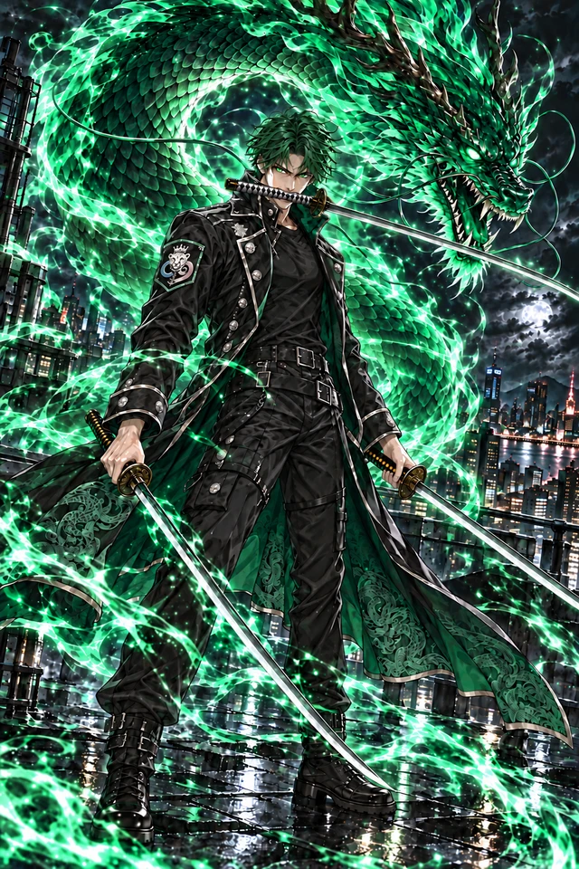

PROJECT V
SSS LIMITED
족로
청룡의 발도
에메랄드 용혼 · 일도 발도술
전체 시연
용혼을 불러오는 중
전투 리소스 준비 중
0.00 / 5.40초
재생
처음부터
타격 순간
중단
속도
0.25×
0.5×
1×
2×
효과음
아우라
동작만
동작 줄이기
01 / AURA
용혼
발도 준비 · 상시 아우라
02 / DASH
비취보
용린 잔광 · 대시
03 / BLADE
녹린일섬
일도 발도 · 참격
04 / SKILL
용령발도
용혼 방출 · 관통
05 / ULTIMATE
청룡참
청룡 · 광역 폭쇄
06 / HIT
피격
충격 흡수 · 회복
07 / DEFEAT
쓰러짐
무릎 · 정착

족로
승인 원화
SEQUENCE
발도 자세를 유지한 채 에메랄드 용혼이 감돈다
검수 상황
정상 재생
시전 중단
대상 소멸
용혼
비취보
녹린일섬
용령발도
청룡참
피격
쓰러짐
동작 원본 보기 ↗
리소스 색인 ↗